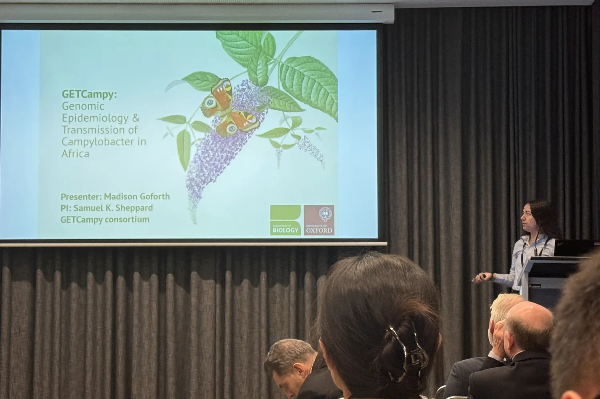
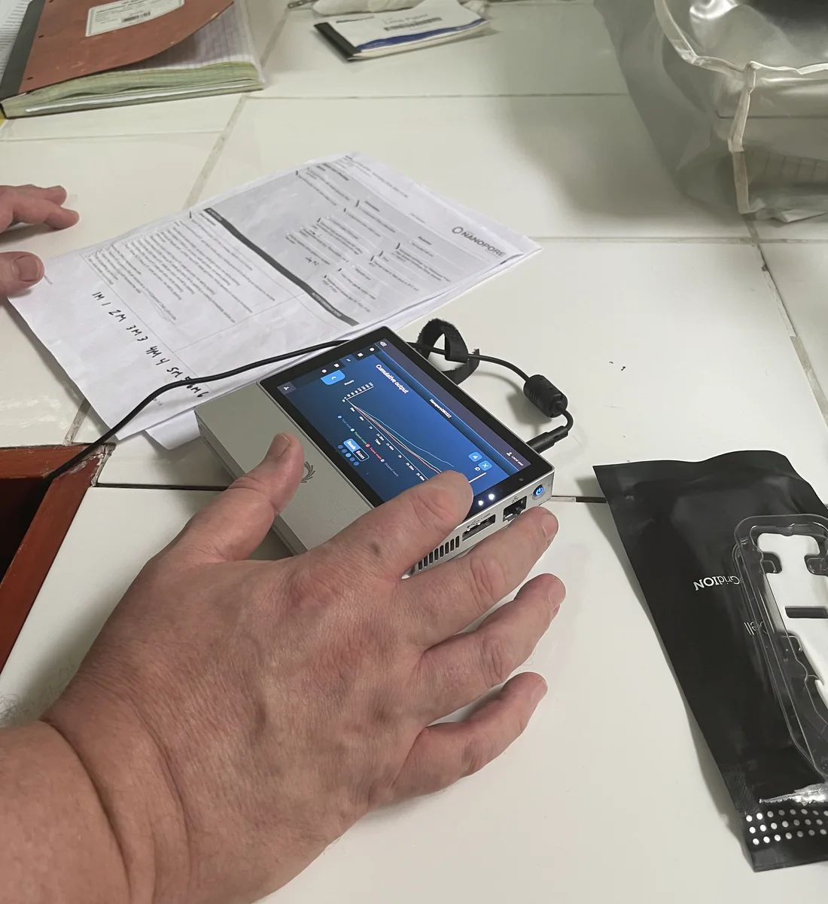

Children
Diarrhoeal disease, asymptomatic carriage and repeated detection during early life.
Project 02-A
Genomic epidemiology and source attribution of enteric bacteria causing diarrhoeal disease across African study sites.
Why this project
Children encounter bacteria through food, animals, household surfaces, water and repeated contact with their local environment. Studying clinical isolates alone therefore captures only one part of the transmission system.
GETcampy uses coordinated epidemiology, microbiology and genomics to compare isolates and metagenomic signals across human, animal and environmental compartments. The aim is to identify the populations that circulate, understand asymptomatic carriage and build stronger evidence about likely routes of exposure.

Study logic
Diarrhoeal disease, asymptomatic carriage and repeated detection during early life.
Family members, food preparation areas, surfaces and shared exposure pathways.
Poultry and livestock as potential reservoirs within local production and household systems.
Water, sediment and environmental samples that may connect otherwise separate reservoirs.
Analytical programme
The project combines culture, qPCR, short- and long-read sequencing, whole-genome comparison, metagenomics and source-attribution modelling. Analyses are designed to account for lineage structure and uneven sampling rather than assuming all genomes are independent observations.
Outputs include a harmonised protocol, reusable laboratory and sequencing procedures, population genomic studies, source attribution and training resources.
From project design to field data



Photographs recovered from the previous Pascoe Lab media archive. Captions are intentionally general until project, location and credit details are confirmed.
Relationship to CCC
The sampling, protocols, partnerships and genomic questions developed through GETcampy feed directly into the Campylobacter Control Campaign.
Continue to CCC